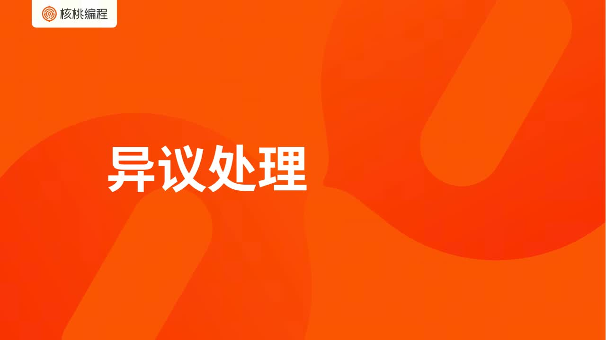
欢迎来到今天的培训课堂，我们学一个带班的必备技能，异议处理。在正式学方法之前，我们先来搞懂一个概念：到底什么是异议？咱们先代入一个生活场景想一想：逛街的时候导购给你推荐一件衣服，说特别适合你，但是你心里会不自觉冒出很多想法：会不会显胖？价格值不值？好不好打理、耐不耐穿？大家注意，这不是我们故意找茬、也不是我们一定不想买，只是心里有顾虑、有担心，这些内心的疑问，就是异议。放到我们的工作里也是一模一样的。在和家长沟通的过程中家长会有各种各样的问题出现，导致他们可能对孩子是否继续学编程产生动摇。所以就产生了异议。很多新人一听到家长提顾虑、说不想学、要退费，第一反应就是紧张，觉得家长是在拒绝我们。但大家一定要记住：异议不等于拒绝，异议只是家长的担心没有被接住，这也是我们今天专门花时间打磨这项技能的原因。
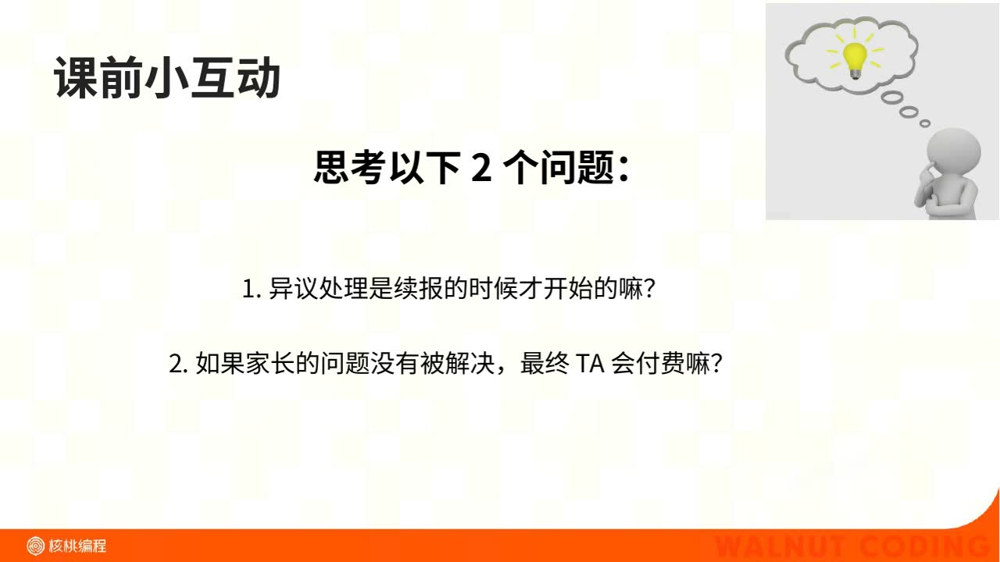
在课程开始之前呢，大家可以思考一下。我们的异议处理是续报的时候才开始的呢？还是说我们加上好友之后就开始了？如果说家长的问题我们没有解决，或者他不满意我们解决的问题，那他最终会付费吗？好，思考完之后，我们带着这两个问题进入我们这节课
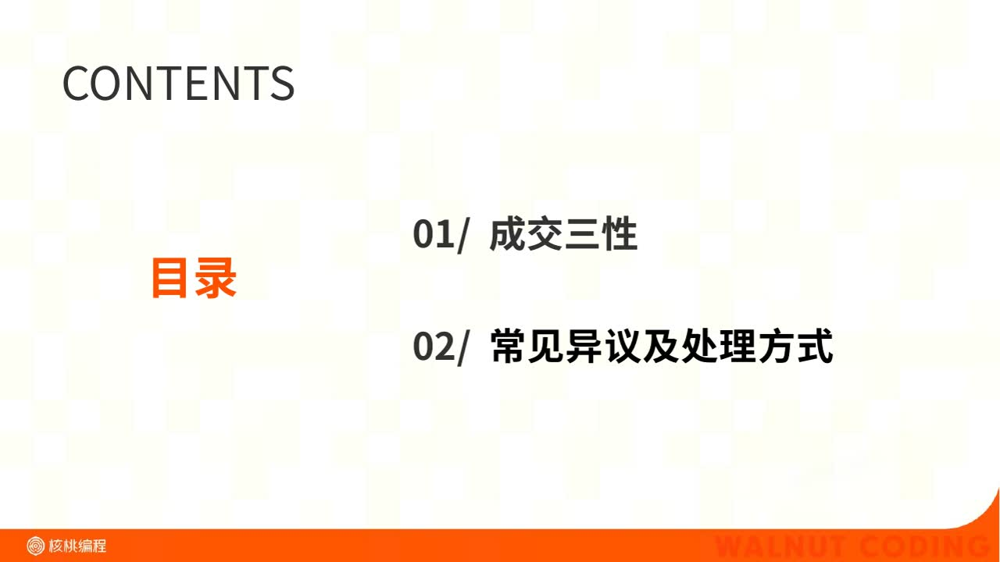
本节课由两个部分组成，第一部分呢，会给大家介绍一个东西，叫成交三性。第二部分呢，会给大家去介绍常见的异议以及我们遇到这些问题的时候，我们应当如何解决？
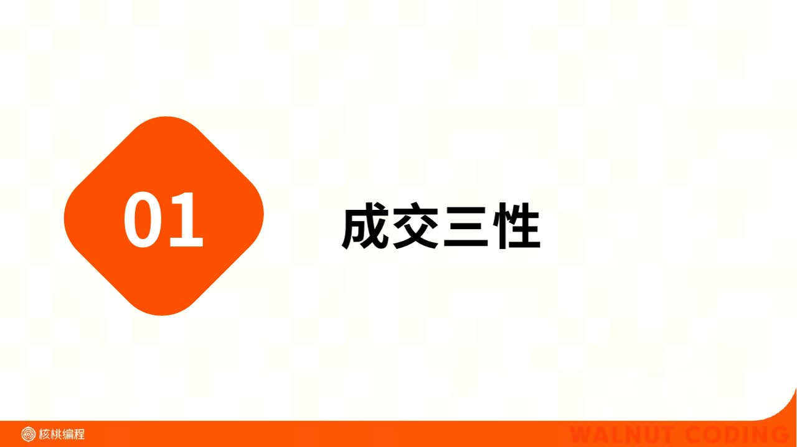
首先第一个我们先来看一下成交三性
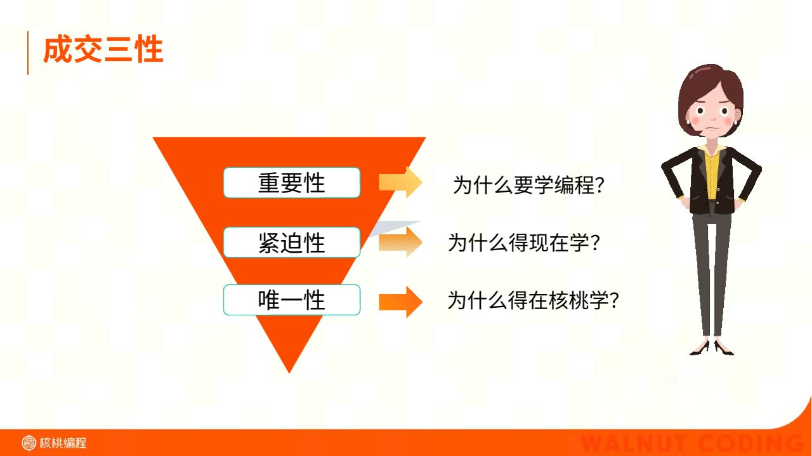
这个成交3性分别是重要性、紧迫性和唯一性。那它，我们在生活中的使用场景也特别的多，只要你涉及任何劝说别人的事情，你都可以用这成交三性去套，全部都用得上成交三性：重要性、紧迫性、唯一性，也是我们跟家长沟通时最核心的一套逻辑。首先第一个，重要性：为什么要学少儿编程？我们要先给家长讲明白少儿编程本身的价值。编程不是单纯教孩子敲代码，核心是锻炼孩子的逻辑思维、拆解问题、试错思考的能力，同时对接信息时代的素养，还有 CTL、GESP 这类权威赛事、科技特长生的升学规划路径，这是编程这件事本身的价值，先让家长认可 “学编程这件事是有意义的”。第二个，紧迫性：为什么现在就要学？认可价值之后，我们要告诉家长不能一直观望、拖延。孩子的思维黄金窗口期是有限的，低龄阶段更容易建立思维习惯；而且赛事、升学规划都有对应的时间节点，越往后，孩子课业压力越来越大，时间会越来越紧张，起步晚了，准备周期就不够。所以不是以后学不学，而是要抓住当下合适的阶段开始。第三点，唯一性：为什么选择核桃编程？核桃有我们独有的优势。我们深耕少儿在线编程多年，有完整从 Scratch 到 C++ 的进阶体系，配套标准化实操课程、赛事辅导、专业的教研和服务，主打重实操，不是单纯看动画、背概念；同时我们的课程体系、学情跟进、赛考规划是成熟闭环，是专门适配孩子长期编程成长的。简单说：很多地方都能学编程，但核桃是更专业、体系更完整、更适合孩子稳步走竞赛和素养路线的选择，这就是我们的不可替代性。总结一下三性的逻辑：先靠重要性解决家长 “要不要学” 的疑问，再用紧迫性打消家长 “以后再说” 的拖延心态，最后用我们核桃独有的唯一性，回答家长 “凭什么选我们，而不是别家”，这也是我们课导在和家长沟通时，贯穿全程的底层思路。来看一道题，成交三性里，「紧迫性」回答的是家长的哪个问题？
互动题
成交三性里，「紧迫性」回答的是家长的哪个问题？
- A. 为什么要学编程
- B. 为什么得现在学
- C. 为什么得在核桃学
- D. 为什么编程这么火
选错后：重讲本页重触发
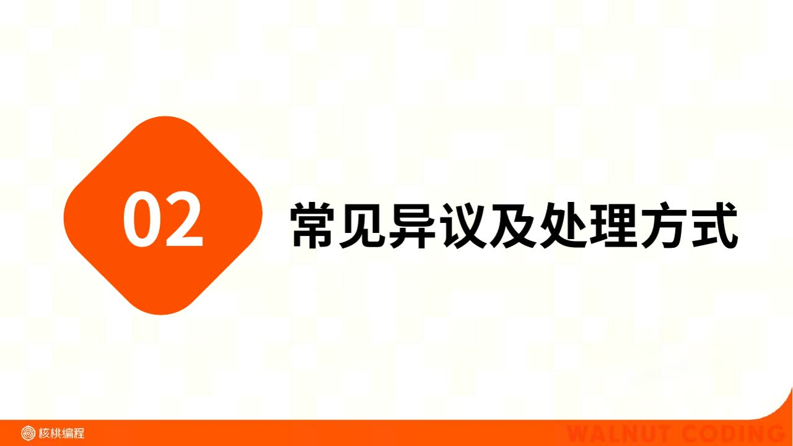
好，接下来我们一块来看一看常见的异议以及对应的解决方式
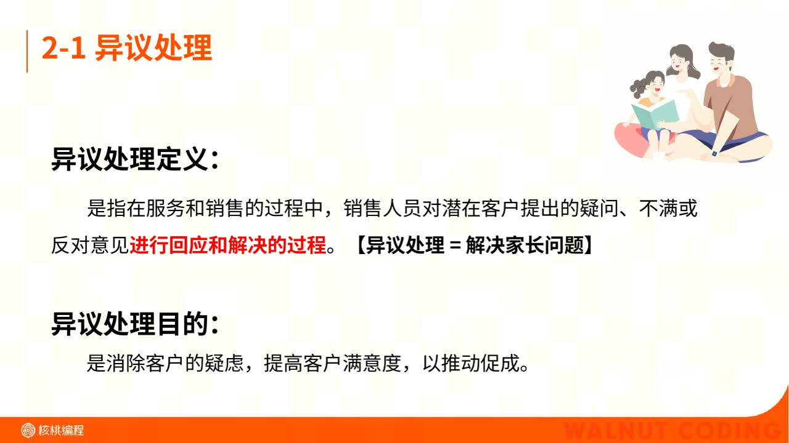
我们进入第二大模块：异议处理。很多新人一听到家长提疑问、说顾虑，第一反应就是紧张，觉得家长在拒绝自己。我们先把定义吃透，纠正这个认知。大家看 PPT 上的定义：异议处理，就是在服务、沟通转化的过程里，我们针对家长提出的疑问、不满、反对意见，去回应、解决的过程。这里重点记住这句加粗核心：异议处理 = 解决家长问题划重点：家长提出异议，不等于拒绝报名。异议本质是家长心里还有顾虑、信息没补齐，他愿意把想法说出来，反而是沟通机会。如果家长什么都不问、直接不回复，那才是真正没有机会。再看异议处理的目的：消除客户的疑虑，提高客户满意度，最终推动促成。这里有一个误区要跟大家强调：异议处理，不是去争辩、说服家长、把家长 “辩赢”。不是家长说一个问题，我们立刻反驳 “不是这样的”。我们的目标是打消顾虑，让家长理解、放心，而不是争对错。争辩只会让家长防备心变强，反而把沟通聊死。我给大家梳理一下底层心态，后面所有异议话术都建立在这个心态上：1. 接纳异议：家长有顾虑是正常的，换作是我们自己报课，也会问价格、担心孩子学不会、对比别家；2. 先接住，再解决：先共情认可，再解释、给方案；3. 落脚点是解决问题，而不是强行逼单。这一页是总起页，是整个异议板块的地基。来看一道题，家长说「我不想学了、再考虑下」，这算拒绝吗？
互动题
家长说「我不想学了、再考虑下」，这算拒绝吗？
- A. 算拒绝，直接放弃跟进
- B. 不算拒绝，是家长的担心没被接住
- C. 算拒绝，过一个月再问
- D. 不算拒绝，家长会自己想通
选错后：重讲本页重触发
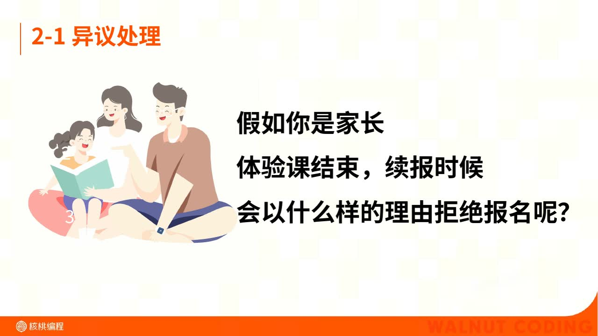
再思考一下，如果你是家长，体验课结束了，你以什么样的理由拒绝报名呢？
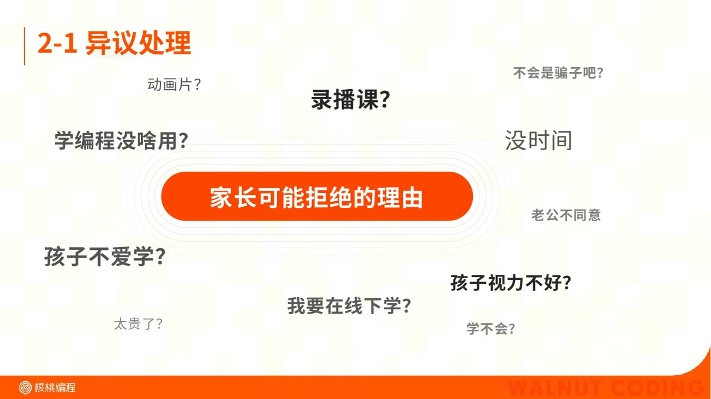
这里汇总了咱们日常沟通里，家长最高频抛出的拒绝理由。大家可以先看一圈，比如学编程没啥用、是不是动画片、是不是录播课、担心是骗子、没时间、家人不同意、孩子视力不好、想报线下、孩子不爱学、太贵、担心孩子学不会等等。很多新人遇到这些话，第一反应就慌了，觉得家长直接拒绝了。但大家一定要记住上一页的核心：异议不是拒绝，是家长心里的疑问。这些理由，本质上就是家长的顾虑清单，也是我们后面要逐个拆解、专项练习的异议场景。我们提前把这些场景熟悉好，等到家长说出来的时候，我们才不会慌乱，有章法去回应。那我们一块来看一看。这些理由我们是怎么样分类的？来看一道题，下面哪几项是页面里列出的家长高频拒绝理由？
互动题
下面哪几项是页面里列出的家长高频拒绝理由？
- A. 孩子视力不好
- B. 老师太年轻
- C. 我要在线下学
- D. 课程太前沿
选错后：重讲本页重触发
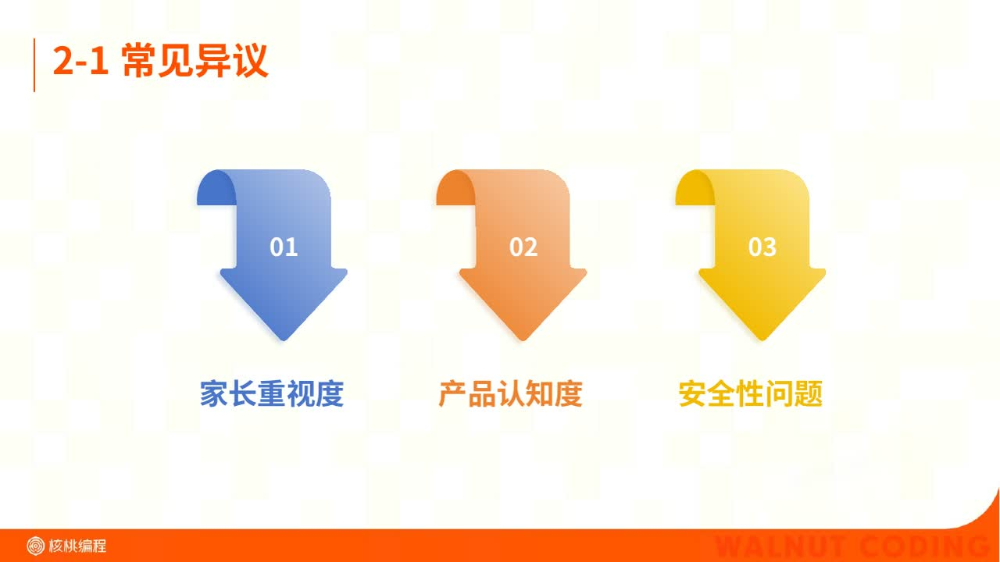
我们接着看这一页，这里把刚才那么多零散的家长异议，归纳成了三大类：家长重视度、产品认知度、安全性问题，这是我们后续拆解异议的分类框架。我们先看第一类：家长重视度。这类异议，本质是家长还没有建立认知，没有把编程这件事放在心上。典型就是咱们刚才看到的：学编程没啥用、觉得可以以后再学、不急着安排；孩子不感兴趣、视力顾虑、时间排不开，很多时候根源也是重视度没建立起来。家长的卡点：不知道编程对孩子的价值，看不到学习窗口期，觉得这件事可学可不学。我们沟通的核心目标，就是帮家长建立价值认知，讲清楚政策、赛事、科技特长的路径，把重视度拉起来。第二类： 产品认知度。这一类是家长知道编程有用，但是不了解咱们核桃的课程模式。常见疑问：是不是动画片？是不是录播课？我想找线下课、担心孩子学不会、觉得价格贵。家长不是否定编程，是对我们的上课形式、课程内容、交付效果、性价比有疑问。我们要做的，是讲清楚实验班的体系、授课模式、配套辅导、赛考交付，消除信息差，帮家长看懂我们课程和别的课的区别。第三类 安全性问题。这个是家长的风险顾虑，最典型的：会不会是骗子、担心资金、上课安全等。家长认可价值，也看懂课程了，但是心里有风险担忧，害怕踩坑、担心影响孩子。我们沟通重点，就是拿出品牌背书、合规保障、护眼上课安排、服务体系，给家长安全感。来看一道题，「不会是骗子吧？怕学费打水漂」属于三大类里的哪一类？
互动题
「不会是骗子吧？怕学费打水漂」属于三大类里的哪一类？
- A. 家长重视度
- B. 产品认知度
- C. 课程时长问题
- D. 安全性问题
选错后：重讲本页重触发
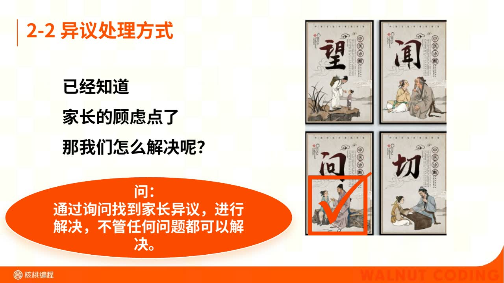
前面我们已经学会识别家长的各类异议，那找到顾虑之后，核心抓手是什么？就是页面上标对勾的 ——问。今天我们只抓核心：问很多新人容易踩坑：家长刚说出顾虑，我们立刻着急解释、急于说服，但是根本不知道家长这句话背后真正的想法是什么。这句话大家记牢：通过询问找到家长异议，进行解决，不管任何问题都可以解决。表层的拒绝理由，往往不是真实卡点。提问，就是帮我们挖到真实原因的工具。举个例子，家长说 “孩子没时间”。我们不要直接上来就讲课程时长、时间灵活。我们可以先提问：想问下，是平时课外班排得比较满，还是担心每次上课占用的时间太长呀？一句话，就能区分家长到底是档期冲突，还是觉得课程耗时间，我们再针对性给方案。来看一道题，观察页面右边的四张图，打了红色对勾的是哪个字？
互动题
观察页面右边的四张图，打了红色对勾的是哪个字？
- A. 望
- B. 闻
- C. 问
- D. 切
选错后：仅弹正确提示继续
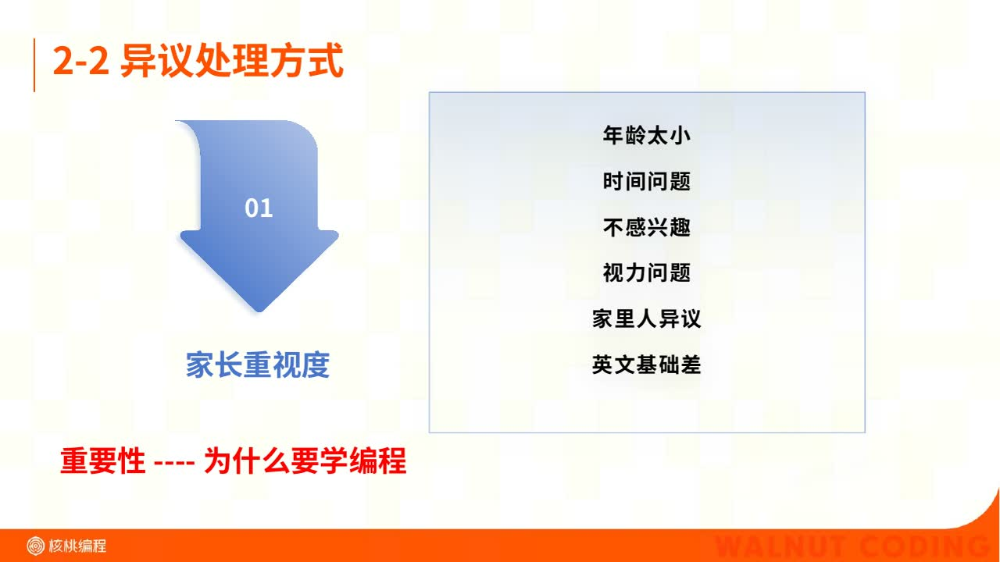
我们来看这一块，对应咱们前面三大异议分类里的第一类：家长重视度，底层对应的就是成交三性里的【重要性】，核心回答：为什么要学编程。右边这 6 个，都是属于家长重视度板块下面高频出现的异议：年龄太小、时间问题、不感兴趣、视力问题、家里人异议、英文基础差。这里先跟大家讲清楚：这些话，表面看起来是各种各样的理由，但本质上，根源是家长还没有真正认可编程的价值。不是问题本身解决不了，是家长心里觉得这件事可学可不学，所以会找出各种理由来暂缓或者拒绝。举几个例子：家长说 “孩子年龄太小”，我们先问：您是担心孩子理解跟不上，还是觉得现在没必要接触编程？家长说 “孩子不感兴趣”，我们先问：是之前接触过觉得没意思，还是担心编程本身枯燥，孩子坐不住？提问之后我们再判断：如果只是单纯担心难度、适配问题，我们再讲课程分层、低龄的授课设计；如果深挖之后，家长核心想法是 “学这个没啥用”，那我们就要回归到【重要性】，重新帮家长建立价值认知，讲清楚逻辑思维、信息素养、科技特长、赛事路径这些。这里给大家一个关键提醒：重视度类异议，是我们最先要攻克的一关。只要家长的重视度没有建立起来，就算我们把时间、视力、英文这些问题全部解释清楚，他后面依然会冒出新的顾虑。价值认同是根基，根基不稳，后面所有沟通都会很吃力。来看一道题，「孩子不感兴趣」表面是兴趣问题，根源通常是什么？
互动题
「孩子不感兴趣」表面是兴趣问题，根源通常是什么？
- A. 课程太贵
- B. 家长重视度没建立，觉得编程可学可不学
- C. 孩子能力不行
- D. 老师不好
选错后：重讲本页重触发
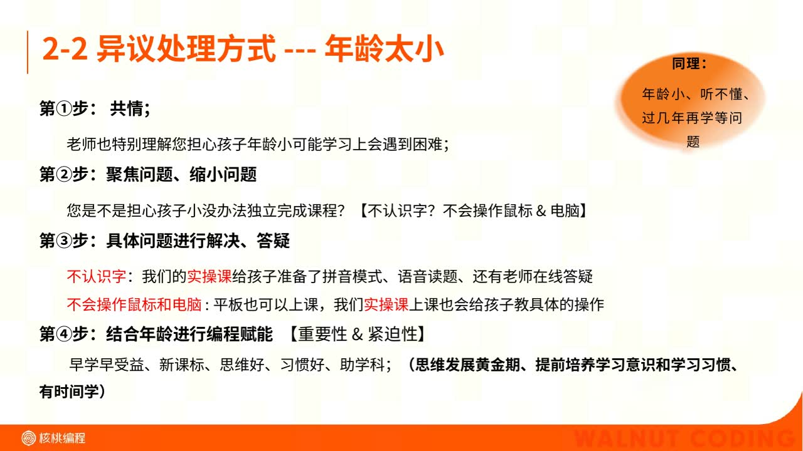
接下来我们进入第一个场景演练：家长说孩子年龄太小这个异议，连同 “听不懂、过几年再学”，逻辑完全一致，统一用固定四步流程：共情→聚焦提问→针对性答疑→赋能拔高（重要性 + 紧迫性），一步都不能跳。第一步：共情，接住情绪。大家一定要记住：家长愿意说出顾虑，不是拒绝，是信任我们，愿意把心里的担心讲出来。我们先站在家长一边，不要一上来就反驳 “不小，可以学”。标准话术：我特别理解您，担心孩子年龄小，学习上会跟不上、遇到困难。先共情，拉近距离，让家长感受到我们和他是一边的，不是对立的。第二步：聚焦问题、缩小问题（也就是我们前面重点练习的【问】）共情完不要直接解释，主动提问，把模糊的担心，挖到具体卡点，区分他到底怕什么。标准提问话术：您是不是担心孩子太小，没办法独立上完课程？是担心不认字看不懂题目，还是不会操作鼠标、电脑呀？一句话把顾虑锁定，避免我们自说自话，答非所问。第三步：针对具体问题答疑，给方案、给案例，打消顾虑根据家长的回答对应解释：如果担心不识字：咱们是实操课，配有拼音模式、语音读题，不用孩子自己认字读题，上课还有老师在线实时答疑，跟着引导动手就行。如果担心不会操作鼠标 / 电脑：咱们平板也能上课，课程前期会专门带着孩子学习基础操作；很多和咱家同龄的孩子，刚开始也不熟练，跟着课程慢慢适应，后面都学得很好，也拿到了不错的学习成果。这里核心：给落地的支撑，用同龄学员案例，给家长定心丸。第四步：结合年龄赋能，回归重要性、紧迫性顾虑解决之后，我们再往上拔高，讲黄金学习窗口，对应成交三性里的重要性和紧迫性。标准话术：其实这个年龄段恰恰是逻辑思维开拓的黄金期，新课标也对信息素养、编程思维有明确要求。早接触早受益，既能锻炼逻辑、养成良好的学习习惯，还能反过来助力校内学科；现在课业压力相对宽松，有充足时间去培养思维；等到后面高年级科目变多，时间紧张，再想安排就很难挤出时间了。话术参考：我特别理解您，担心孩子年龄小，学习上会遇到困难。（共情）您是不是担心孩子太小没办法独立完成课程？是担心不认字看不懂题目，还是不会操作鼠标、电脑呀？（聚焦提问）如果是不认字您不用担心，咱们实操课有拼音模式、语音读题，还有老师在线答疑；如果是不会操作设备，平板也能上课，课程里面会带着孩子慢慢学操作。咱们很多同年龄段的孩子也是从零开始，适应之后学习效果都很好。（针对性答疑）而且这个阶段正是孩子思维发展的黄金期，新课标也重视信息素养培养，早学早受益，锻炼逻辑思维、培养学习习惯，还能助力校内学科。现在课业压力不大，还有时间深耕，等到后面高年级功课多了，就很难抽出时间了。（赋能、讲重要性 + 紧迫性）。来看一道题，「年龄太小」的标准处理流程，正确的顺序是？
互动题
「年龄太小」的标准处理流程，正确的顺序是？
- A. 共情→聚焦提问→针对性答疑→赋能
- B. 答疑→共情→赋能→提问
- C. 提问→共情→赋能→答疑
- D. 赋能→答疑→提问→共情
选错后：重讲本页重触发
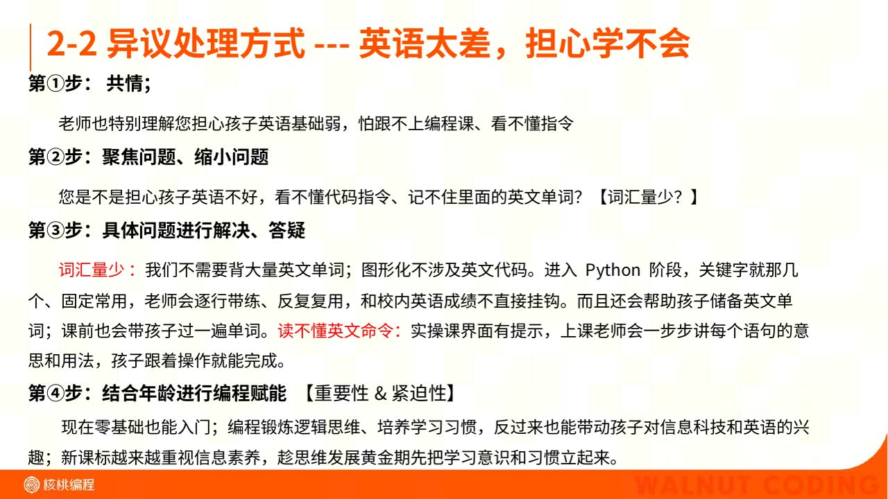
接下来我们学习第二个高频异议：家长担心孩子英语基础弱，学不了编程。同样严格沿用咱们统一的四步流程：共情→聚焦提问→针对性答疑→赋能拔高（重要性 + 紧迫性），步骤不能跳。第一步：共情，接住情绪家长愿意说出这份担心，不是直接拒绝，是心里有顾虑，希望得到靠谱的解答。我们先站在家长这边，不要直接反驳 “学编程不用英语好”。标准话术：我特别理解您的顾虑，担心孩子英语基础薄弱，跟不上编程课、看不懂代码指令。第二步：聚焦问题、缩小问题（核心动作：问）共情完不要直接开始解释，主动提问，把模糊的担心锁定到具体卡点，搞清楚家长真正怕什么。标准提问话术：您是不是担心孩子英语不好，看不懂代码指令、记不住里面的英文单词，怕词汇量不够跟不上？第三步：针对具体问题答疑，给方案、打消顾虑根据家长的回答对应解释：咱们编程学习，并不要求孩子去背大量英语单词。图形化阶段还涉及不到英文代码。您不用担心的。就算学到 Python 阶段，用到的关键字也就固定那几个，数量很少，上课老师会逐行带着孩子实操、反复练习，熟练之后自然就记住了，编程学习和校内英语成绩并不直接挂钩，反而还能顺便积累这部分专用英文词汇。课前老师也会提前带着孩子过一遍本节课要用到的单词。如果孩子看不懂英文命令也不用担心，实操课界面自带提示，上课老师会一步步拆解、讲解每一条语句的含义和用法，孩子跟着引导动手操作，就可以完成任务。第四步：结合年龄赋能，回归重要性、紧迫性顾虑解开之后，我们再拔高价值，讲清楚当下学习的意义。标准话术：编程核心锻炼的是逻辑思维，培养孩子的学习习惯，在学习过程中，还能反过来带动孩子对信息科技、英文词汇的兴趣。现在新课标越来越看重信息素养，当下正是孩子思维发展的黄金期，咱们可以先把学习意识、良好的思维习惯建立起来，不用被英语基础这个门槛困住。话术参考：我特别理解您的顾虑，担心孩子英语基础薄弱，跟不上编程课、看不懂代码指令。（共情）您是不是担心孩子英语不好，看不懂代码指令、记不住里面的英文单词，怕词汇量不够跟不上？（聚焦提问）其实学编程不需要背大量英文单词，图形化阶段没有英文代码，就算学到 Python 阶段，用到的关键字就固定几个，老师上课会逐行带练、反复巩固，和校内英语成绩不直接挂钩，还能顺带积累专用词汇；课前也会提前带孩子预习单词。看不懂命令也不用担心，实操界面有提示，老师会一步步讲解语句意思，孩子跟着操作就能完成。（针对性答疑）而且咱们零基础就能入门，编程重点锻炼逻辑思维、培养学习习惯，还能带动孩子对信息科技和英语的兴趣。新课标越来越重视信息素养，正好趁着思维黄金期，帮孩子把学习意识和习惯先建立起来。（赋能、讲重要性 + 紧迫性）。来看一道题，图形化阶段需要孩子先背大量英文单词吗？
互动题
图形化阶段需要孩子先背大量英文单词吗？
- A. 需要，先背 3000 词
- B. 不需要，图形化不涉及英文代码
- C. 需要，每周考单词
- D. 看孩子心情
选错后：重讲本页重触发
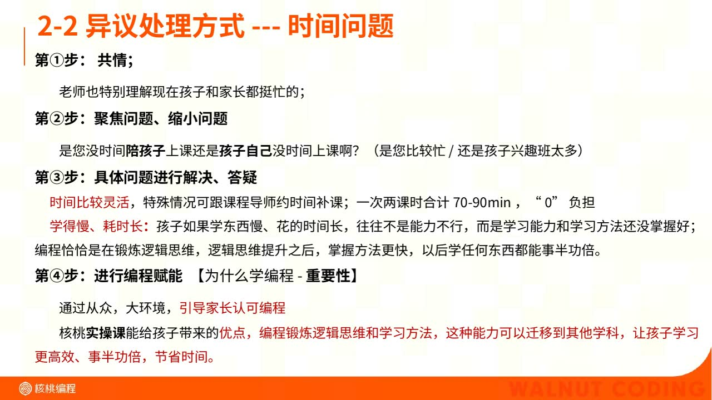
接下来我们学习第三个高频异议：家长说没时间、排不开。依旧严格使用统一四步流程：共情→聚焦提问→针对性答疑→赋能拔高（重要性），顺序不能跳。第一步：共情，接住情绪现在孩子课外安排多，家长陪学也耗精力，家长提出时间紧张，是非常现实的顾虑。我们先共情，不要直接跟家长说 “挤一挤就有时间”。标准话术：我特别理解，现在孩子课业、兴趣班多，不管是孩子还是咱们家长，平时都挺忙的。第二步：聚焦问题、缩小问题（核心动作：问）共情之后先不着急给方案，主动提问，分清到底卡点在家长，还是孩子本身。标准提问话术：想问下，是您没时间陪孩子上课，还是孩子课外班排得太满，抽不出时间呀？第三步：针对具体问题答疑，分两种情况解决如果是档期冲突、怕固定时间不方便：咱们上课时间很灵活，遇到特殊情况没法上课，可以直接跟课程老师预约补课。单次两课时合计 70–90 分钟，整体安排轻量化，不会给孩子造成很重的负担。如果是担心孩子学得慢、耗时间：很多孩子学东西慢，并不是能力不够，而是缺少好的学习思路和方法。编程核心练的就是逻辑思维，思维提上来之后，孩子掌握学习方法，之后学其他科目、新知识都会更快。第四步：结合编程赋能，回归重要性把格局拉高，讲清楚编程不是额外增加负担，而是帮孩子提升效率的工具。标准话术：现在越来越多家长重视信息素养、逻辑思维的培养，编程锻炼的思维和学习方法，是可以迁移到校内各科的。学好之后，孩子学习效率更高，反而能帮孩子省下不少时间，越学越轻松。话术参考：我特别理解，现在孩子课业、兴趣班多，不管是孩子还是咱们家长，平时都挺忙的。（共情）想问下，是您没时间陪孩子上课，还是孩子课外班排得太满，抽不出时间呀？（聚焦提问）如果是时间不好协调，咱们上课时间灵活，有事可以跟导师约补课，一次两课时一共 70–90 分钟，不会有很重的负担；如果您担心孩子学得慢、耗时间，其实很多孩子学得慢，根源是缺少学习方法。编程专门锻炼逻辑思维，思维提上来之后，学新知识会更快。（针对性答疑）现在大环境下，逻辑思维、信息素养都是重点。编程练出来的思维能力可以用到其他学科，提升孩子整体学习效率，长远来看，是帮孩子省时间，而不是单纯多报一门课。（赋能、讲重要性）。来看一道题，家长说「没时间」，共情之后第一句该问什么？
互动题
家长说「没时间」，共情之后第一句该问什么？
- A. 直接介绍补课规则
- B. 是您没时间陪孩子上课，还是孩子自己没时间上课
- C. 那就算了不勉强
- D. 让爸爸决定
选错后：重讲本页重触发
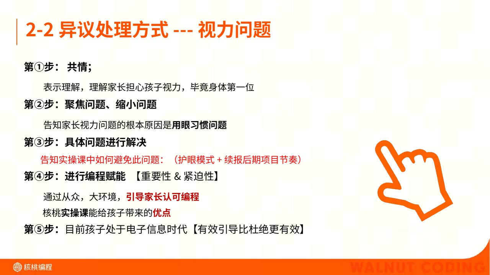
接下来我们学习视力这个高频异议，这个家长顾虑非常真实，很多家长都会担心线上上课伤眼睛。咱们这套流程在之前 4 步基础上，增加第 5 步，顺序不能乱：共情→聚焦问题→针对性答疑→编程赋能→时代认知引导第一步：共情，接住情绪家长担心视力是非常合理的，孩子的健康肯定是第一位的，我们千万不要否定家长的担心。标准话术：特别理解您的想法，担心孩子长时间看屏幕影响视力，毕竟孩子的身体健康肯定是放在第一位的。第二步：聚焦问题、缩小问题共情之后，我们帮家长理清核心：近视的根源，并不只是看电子屏幕，更多是用眼习惯。标准话术：其实很多家长都会有这个顾虑，咱们可以先客观说一下，影响视力的根本，主要还是用眼时长、坐姿、休息这些用眼习惯，不是电子产品本身。第三步：具体问题答疑，讲课程护眼设计咱们课程本身也做了对应的护眼安排，给家长落地的安心方案：咱们实操课自带护眼模式，同时课程节奏是科学拆分的，不是一直盯着屏幕；后期续报之后的项目学习，也会穿插思考、构思环节，不会让孩子全程盯着屏幕操作。我们上课也会提醒孩子保持距离、定时休息，帮孩子养成良好的用眼习惯。第四步：编程赋能，回归重要性 + 紧迫性打消屏幕焦虑之后，再给家长讲课程价值：现在很多家长都在布局信息素养学习，编程锻炼逻辑思维、解决问题的能力，是新课标重点方向，趁着孩子思维黄金期培养，对孩子长期发展很有帮助。核桃实操课重在动手思考，收获的是思维能力，不是单纯对着屏幕玩。第五步：时代认知拔高：有效引导，比杜绝更有用收尾升华：现在孩子本身就处在电子信息时代，完全不让孩子接触电子产品是很难做到的。与其被动让孩子无目的刷短视频、玩游戏，不如我们做正向有效的引导，用编程把电子产品变成学习工具，让孩子有目标、有规划地使用，学会合理把控屏幕时间。话术参考 我特别理解您的想法，担心孩子长时间看屏幕影响视力，毕竟孩子的身体健康肯定是放在第一位的。（共情）其实很多家长都会有这个顾虑，咱们客观来说，影响视力的根本，主要还是用眼习惯，不单单是电子产品本身。（聚焦问题）咱们实操课自带护眼模式，课程节奏也是科学设计的，不会让孩子一直盯着屏幕；后期项目学习阶段，也会预留思考规划的时间，同时上课过程中老师也会提醒孩子注意坐姿、定时休息，帮孩子建立好的用眼习惯。（答疑）现在大环境下信息素养越来越重要，编程锻炼逻辑思维，也是新课标要求的方向，核桃实操课重点培养孩子思考能力，对孩子长期学习很有帮助。（赋能）而且现在孩子本来就在电子信息时代，完全隔绝电子产品很难。与其放任孩子漫无目的地刷视频，不如正向引导，把电子产品变成学习工具，学会合理使用，这比单纯禁止更有意义。（时代引导）。来看一道题，视力异议的处理比其他异议多出第⑤步，第⑤步讲什么？
互动题
视力异议的处理比其他异议多出第⑤步，第⑤步讲什么？
- A. 降价安抚
- B. 目前孩子处于电子信息时代，有效引导比杜绝更有效
- C. 发护眼宣传单
- D. 承诺保护视力
选错后：重讲本页重触发
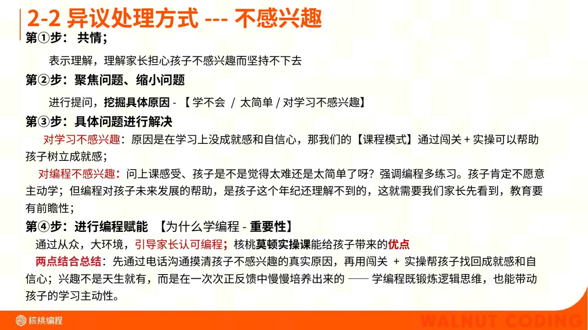
接下来我们学习 “孩子不感兴趣” 这个异议，这个异议很常见，大家记住，兴趣不是凭空来的，我们依旧用固定流程：共情→聚焦提问挖真实原因→分情况答疑→编程赋能拔高第一步：共情，接住情绪家长担心孩子没兴趣、学着学着就放弃，这份顾虑非常实在，我们先认可家长的担心，不要直接反驳。标准话术：我特别理解您的担心，怕孩子没有兴趣，学不进去、坚持不下来。第二步：聚焦问题、缩小问题（核心动作：问）共情之后不要直接讲课程，主动提问，区分背后真实原因，是太难、太简单，还是本身对学习没动力。标准提问话术：想问下，您是觉得孩子之前试了觉得学不会，还是觉得内容太简单没意思，或是孩子本身对学习类内容不容易提起兴趣呀？第三步：分情况针对性答疑如果是孩子对学习本身没兴趣、缺少自信：很多孩子不爱学习，根源是很少拿到成就感。咱们课程是闯关 + 实操的模式，每完成一个作品、闯过一关，都能看到自己的成果，一点点帮孩子建立成就感和自信心，慢慢愿意主动投入。主动给孩子安排小灶或电话沟通，给信心和肯定。如果是孩子对编程本身提不起兴趣：咱们可以先问问孩子上课感受，看是觉得难度跟不上，还是觉得内容太简单。编程本身是需要多练习的，很多孩子年纪小，暂时看不到它的价值。很多时候孩子当下不感兴趣很正常，编程对升学、思维、未来信息素养的帮助，是孩子现阶段理解不到的，这就需要家长多一点教育前瞻性，帮孩子抓住机会。第四步：编程赋能，回归重要性现在信息素养是大趋势，很多家长都在给孩子规划编程学习。核桃莫顿实操课不只是学代码，核心锻炼逻辑思维。这里大家一定要记住核心总结：我们先沟通摸清孩子不感兴趣的真实原因，再用闯关实操的正向反馈培养兴趣。兴趣不是天生的，是一次次拿到成就感之后慢慢养出来的学好编程，既能锻炼逻辑，还能带动孩子整体的学习主动性。话术参考：孩子对这个不感兴趣，怕学两天就不想学了。老师：我特别理解您的担心，怕孩子没有兴趣，学不进去、坚持不下来。（共情）想问下，您是觉得孩子之前试了觉得学不会，还是觉得内容太简单没意思，或是孩子本身对学习类内容不容易提起兴趣呀？（聚焦提问）如果是孩子平时学习不容易有动力，大多是缺少成就感。咱们课程闯关 + 实操的形式，孩子每做完一个作品就能看到成果，慢慢建立自信；如果是孩子对编程本身没感觉，咱们也可以先看上课感受，判断是难度不合适还是别的原因。很多小朋友年纪小，暂时感受不到编程的价值，这特别正常，编程带来的思维提升、信息素养积累，是需要家长带着前瞻性眼光去规划的。（针对性答疑）现在大环境下信息素养越来越重要，核桃莫顿实操课重点锻炼逻辑。兴趣不是天生就有的，是在一次次正向反馈里慢慢培养出来的，学好编程，不仅锻炼思维，还能带动孩子整体的学习主动性。（赋能）。来看一道题，「不感兴趣」第②步要挖掘的三种可能原因是？
互动题
「不感兴趣」第②步要挖掘的三种可能原因是？
- A. 学不会
- B. 太简单
- C. 对学习不感兴趣
- D. 太贵
选错后：重讲本页重触发
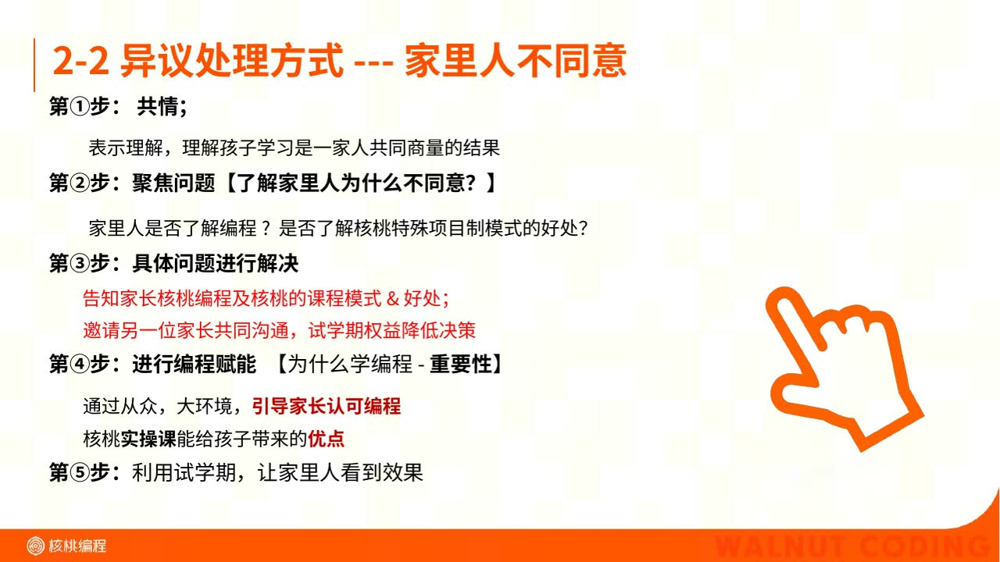
家里人不支持学编程。很多家庭报课需要全家达成共识，第一步：共情，接住情绪孩子报课本来就是一家人一起商量的大事，有不同意见很正常，不要给家长施压。标准话术：我特别理解，孩子的学习规划本来就是一家人一起商量决定的，有不同想法特别正常。第二步：聚焦问题、缩小问题共情之后，主动提问，找到家人反对的根源，区分是不了解编程，还是不了解咱们核桃的课程。标准提问话术：想问下，家里人是对编程本身不太了解，还是不清楚咱们核桃这种项目实操课的优势，才不太认可呀第三步：具体问题答疑如果家人是不了解编程、不了解咱们课程：咱们可以跟家长讲清楚核桃编程的课程模式和价值，咱们是项目实操课，不是单纯敲代码，重点锻炼孩子逻辑思维。同时给到方案：方便的话，可以邀请家里另一位家长一起沟通，我把课程内容、培养方向再完整讲一遍；咱们还有试学期权益，也可以先体验，不用一下子做长期决定，降低决策压力。第四步：编程赋能，回归重要性现在新课标对信息素养越来越重视，很多家庭都在给孩子规划编程学习。核桃实操课，是以项目带动学习，锻炼孩子拆解问题、动手解决问题的能力，这个能力是可以迁移到校内各科学习里的。第五步：落地收尾，用试学期看见效果咱们可以先利用试学期，让孩子先上课、做出作品，家人亲眼看到孩子的变化、上课成果，比口头解释更有说服力，更容易达成共识。最后可以询问编程平时是谁跟进，跟进人肯定更加了解孩子的学习情况。家里其他人不了解孩子的兴趣和课程表现自然没有那么肯定。参考话术：我特别理解，孩子的学习规划本来就是一家人一起商量决定的，有不同想法特别正常。（共情）想问下，家里人是对编程本身不太了解，还是不清楚咱们核桃这种项目制实操课的优势，才不太认可呀？（聚焦提问）如果是还不了解，我可以跟您说下咱们核桃的课程模式，咱们是项目制实操课，核心锻炼孩子的逻辑思维。要是方便，也可以邀请家里另一位家长一起来沟通，我完整介绍；而且咱们有试学期权益，可以先体验，不用一下子做长期决定，压力会小很多。（针对性答疑）现在大环境里信息素养是重点方向，很多家长都在提前规划，咱们实操课重在项目式学习，锻炼孩子拆解问题、解决问题的能力，对孩子长期学习帮助很大。（赋能）咱们可以先借着试学期，让孩子先上课、产出作品，等家里人看到孩子上课的状态和学习成果，也更容易理解和认可。（试学期落地）。来看一道题，家里人不同意，靠什么让家人亲眼看到效果？
互动题
家里人不同意，靠什么让家人亲眼看到效果？
- A. 口头保证
- B. 利用试学期，让孩子先上课、做出作品
- C. 直接降价
- D. 发朋友圈宣传
选错后：重讲本页重触发
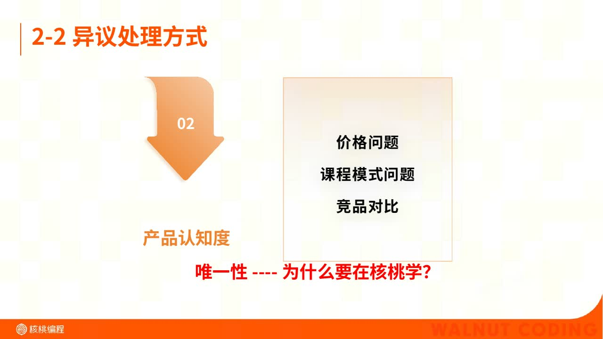
前面我们讲的是孩子层面的异议，比如年龄、兴趣、视力、时间。这一板块，进入【产品认知度】，也就是成交三性里的唯一性，核心回答家长一句话：为什么我要选择核桃，而不是别的？家长在这里的疑问，集中在三个：价格、上课模式、和其他机构对比。我们所有回答，都不要去否定别的机构，而是帮家长看懂价值差别，把核桃实操体系这个核心优势讲透。
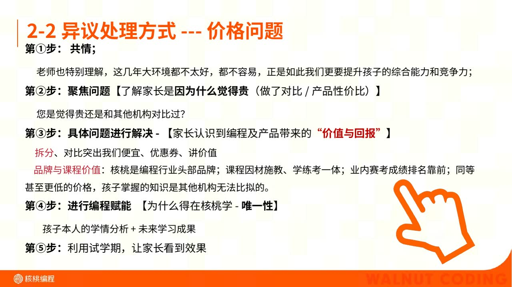
接下来我们看价格异议，共情→聚焦问题→解决问题（讲价值回报）→编程赋能（唯一性）→试学期兜底。核心思路：先接纳家长的经济顾虑，再把家长的关注点从 “多少钱” 转到 “能拿到什么价值”，最后用试学期降低决策压力。第①步：共情老师也特别理解，这几年大环境都不太好，大家挣钱都不容易，也正是这样，咱们更要帮孩子提升综合能力和长期竞争力。第②步：聚焦问题【目标】搞清楚家长觉得贵的根源：是单纯觉得预算超了，还是横向对比过别家话术：您是单纯觉得价格偏高，还是已经和其他机构对比过？第③步：具体问题进行解决【目标】让家长看见产品的价值与回报，拆分价格、讲优惠、讲品牌课程优势话术：咱们可以拆开看总价、课时和配套权益，同时咱们还有优惠券可以用。核桃是编程行业头部品牌，课程因材施教、学练考一体，业内赛考成绩排名靠前。很多家长对比之后发现，同等甚至更低的预算，孩子在这里掌握的知识、配套赛事资源，是其他机构很难给到的。第④步：编程赋能（唯一性为什么在核桃学）【目标】绑定孩子个人学情，讲清楚专属学习成果话术：结合咱们孩子现在的学情，这套课程是适配他能力阶段的，跟着体系稳步搭建编程逻辑，后续可以衔接 GESP、CTL 赛事，拿到赛考成果，给孩子多一条科技特长发展路径。第⑤步：利用试学期，让家长看到效果话术：咱们还有试学期，不用一次性做长期的报名决定，先让孩子上课体验，您直接观察孩子的课堂状态、产出的作品，亲眼看见学习效果。参考话术：老师也特别理解，这几年大环境都不太好，大家挣钱都不容易，也正是这样，咱们更要帮孩子提升综合能力和长期竞争力。（共情）您是单纯觉得价格偏高，还是已经和其他机构对比过？（聚焦）咱们可以拆开看总价、课时和配套权益，同时咱们还有优惠券可以用。核桃是编程行业头部品牌，课程因材施教、学练考一体，业内赛考成绩排名靠前。很多家长对比之后发现，同等甚至更低的预算，孩子在这里掌握的知识、配套赛事资源，是其他机构很难给到的。（解决问题）结合咱们孩子现在的学情，这套课程是适配他能力阶段的，跟着体系稳步搭建编程逻辑，后续可以衔接 GESP、CTL 赛事，拿到赛考成果，给孩子多一条科技特长发展路径。（唯一性赋能）咱们还有试学期，不用一次性做长期的报名决定，先让孩子上课体验，您直接观察孩子的课堂状态、产出的作品，亲眼看见学习效果。（试学期落地）。来看一道题，家长说「太贵了」，第②步要先弄清什么？
互动题
家长说「太贵了」，第②步要先弄清什么？
- A. 家长的收入水平
- B. 是单纯觉得贵，还是已经和其他机构对比过
- C. 孩子的成绩
- D. 家长的职业
选错后：重讲本页重触发
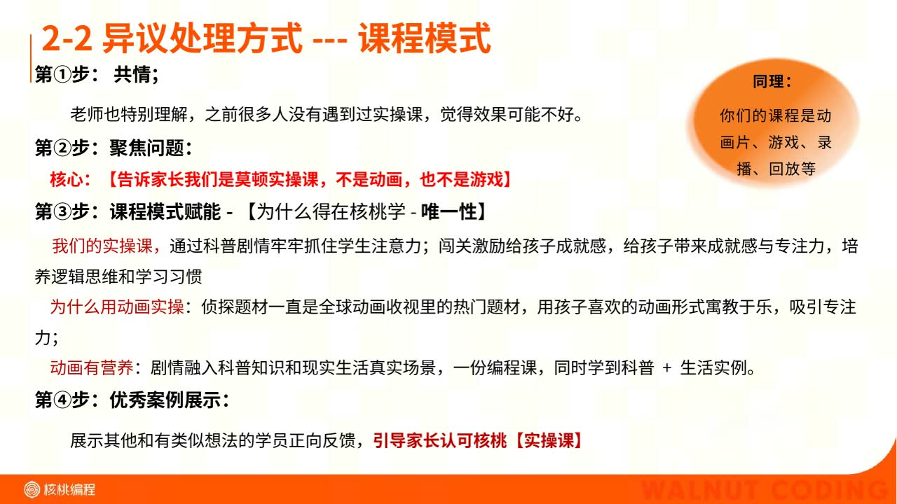
接下来我们是课程模式异议，一共 4 步：共情→聚焦问题→课程模式赋能（唯一性）→优秀案例展示。很多家长容易把咱们的莫顿实操课，误以为是动画片、游戏、单纯录播回放，我们这一步核心就是区分清楚：咱们是莫顿+实操课，不是动画游戏课。第①步：共情老师也特别理解，之前很多家长没接触过这种实操课，会担心这种形式学习效果不好。第②步：聚焦问题【目标】明确区分，纠正认知：咱们是莫顿实操课，不是动画、游戏，也不是单纯录播回放话术：很多家长第一眼会以为是动画片、游戏或者录播回放，其实咱们是莫顿实操课，孩子是跟着剧情动手写代码做项目，不是光看动画。第③步：课程模式赋能（唯一性｜为什么在核桃学）话术：咱们这套实操课，用科普剧情抓住孩子注意力，闯关激励机制，持续给到孩子成就感。咱们选用孩子很喜欢的侦探类题材，这类题材本身就很吸引孩子，是寓教于乐，不是单纯玩；而且剧情里面融入科普知识、真实生活场景，孩子上一节编程课，编程思维、科普常识、生活认知一起收获。第④步：优秀案例展示话术：之前也有不少家长一开始和您想法一样，担心是看动画玩游戏，您可以看下这些学员的作品和家长反馈，孩子都是独立动手完成项目，学完之后逻辑、专注力提升都很明显。话术参考老师也特别理解，之前很多家长没接触过这种实操课，会担心这种形式学习效果不好。（共情）很多家长第一眼会以为是动画片、游戏或者录播回放，其实咱们是莫顿实操课，孩子是跟着剧情动手写代码做项目，不是光看动画。（聚焦）咱们这套实操课，用科普剧情抓住孩子注意力，闯关激励机制，持续给到孩子成就感。咱们选用孩子很喜欢的侦探类题材，这类题材本身就很吸引孩子，是寓教于乐，不是单纯玩；而且剧情里面融入科普知识、真实生活场景，孩子上一节编程课，编程思维、科普常识、生活认知一起收获。（课程赋能，唯一性）之前也有不少家长一开始和您想法一样，担心是看动画玩游戏，您可以看下这些学员的作品和家长反馈，孩子都是独立动手完成项目，学完之后逻辑、专注力提升都很明显。来看一道题，关于咱们的课程，哪种描述是对的？
互动题
关于咱们的课程，哪种描述是对的？
- A. 动画片课
- B. 游戏课
- C. 纯录播回放
- D. 莫顿实操课，孩子跟着剧情动手写代码做项目
选错后：重讲本页重触发
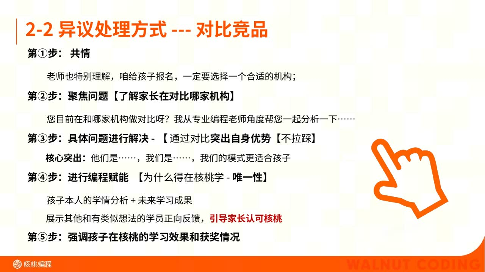
接下来是竞品对比异议，一共 5 步：共情→聚焦问题→对比拆解优势（不踩竞品）→编程赋能→展示学习效果与获奖案例。核心原则：不拉踩同行，只做差异化对比，回归核桃唯一性。第①步：共情老师也特别理解，咱们给孩子报课，肯定要多方对比，挑选一个真正适合孩子的机构。第②步：聚焦问题【目标】摸清家长正在对比的机构，找准对比方向话术：您目前是在和哪家机构做对比呀？我从专业编程老师的角度，帮您一起客观分析一下。第③步：具体问题进行解决（对比突出优势，不贬低竞品）话术：每家机构的定位不一样，他们侧重什么，而核桃主打莫顿实操体系，学练考一体，整套课程从图形化平稳衔接C++，配套完整赛事规划，会更贴合咱们孩子长期的编程学习路线。第④步：编程赋能（唯一性为什么在核桃学）话术：结合咱们孩子现在的学情来看，这套体系匹配他现阶段能力，循序渐进搭建逻辑思维，后续可以冲刺 GESP、CTL 赛事，拿到对应的证书成果，给孩子多一条科技特长发展路径。也有很多之前在多家机构对比过的家长，最后选择核桃，您可以参考下他们的反馈。⑤步：强调孩子在核桃的学习效果和获奖情况话术：咱们很多学员跟着体系持续学习，不仅编程思维、自主解决问题的能力提升明显，在各类官方赛事中也取得了不错的成绩，这也是咱们整套体系落地的结果。话术参考：老师也特别理解，咱们给孩子报课，肯定要多方对比，挑选一个真正适合孩子的机构。（共情）您目前是在和哪家机构做对比呀？我从专业编程老师的角度，帮您一起客观分析一下。（聚焦）每家机构的定位不一样，他们侧重什么，而核桃主打莫顿项目制实操体系，学练考一体，整套课程从图形化平稳衔接趣 C、C++，配套完整赛事规划，会更贴合咱们孩子长期的编程学习路线。（对比拆解，不拉踩）结合咱们孩子现在的学情来看，这套体系匹配他现阶段能力，循序渐进搭建逻辑思维，后续可以冲刺 GESP、CTL 赛事，拿到对应的证书成果，给孩子多一条科技特长发展路径。也有很多之前在多家机构对比过的家长，最后选择核桃，您可以参考下他们的反馈。（编程赋能）咱们很多学员跟着体系持续学习，不仅编程思维、自主解决问题的能力提升明显，在各类官方赛事中也取得了不错的成绩，这也是咱们整套体系落地的结果。（学习效果 & 获奖佐证）。来看一道题，对比竞品的核心原则是？
互动题
对比竞品的核心原则是？
- A. 贬低对手抬高自己
- B. 不拉踩、不贬低，只做差异化对比
- C. 报更低价格
- D. 回避家长问题
选错后：重讲本页重触发
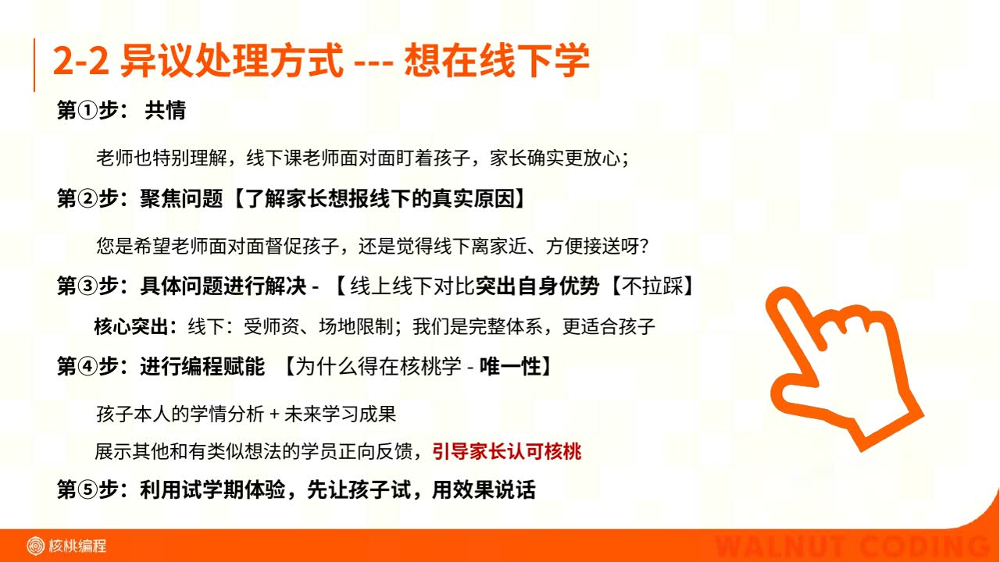
接下来我们看「想在线下学」这个异议，同样沿用 5 步流程：共情→聚焦问题→讲清线上线下差异（不贬低线下）→编程赋能→试学期落地。核心原则：不否定线下课，帮家长看懂线上系统实操的差异化优势。第①步：共情老师也特别理解，线下课老师面对面盯着孩子，家长确实更放心，有这样的偏好很正常。第②步：聚焦问题【目标】摸清家长想报线下的真实原因话术：您是希望老师面对面督促孩子学习，还是觉得线下离家近、接送方便呀？第③步：具体问题进行解决（讲清线上线下差异，不贬低线下）话术：线下课面对面督促有它的优势，不过线下受师资、场地和时间限制，大多集中在启蒙入门阶段；咱们线上是完整的系统实操体系，从图形化到趣 C、C++ 全程进阶，授课的是全国头部教研团队，孩子每节课跟着剧情动手写代码做项目，时间安排也灵活，不用来回接送，省下的时间可以更好地安排学习。第④步：编程赋能（唯一性为什么在核桃学）话术：结合咱们孩子现在的学情来看，这套体系匹配他现阶段能力，循序渐进搭建逻辑思维，后续可以衔接 GESP、CTL 赛事，拿到对应的证书成果，给孩子多一条科技特长发展路径。第⑤步：利用试学期体验，先让孩子试，用效果说话话术：咱们有试学期，不用直接做长期决定，先让孩子上课体验，您观察孩子的课堂状态和产出的作品，眼见为实。话术参考：老师也特别理解，线下课老师面对面盯着孩子，家长确实更放心，有这样的偏好很正常。（共情）您是希望老师面对面督促孩子学习，还是觉得线下离家近、接送方便呀？（聚焦）线下课面对面督促有优势，不过线下受师资、场地和时间限制，大多集中在启蒙入门；咱们线上是完整系统实操体系，图形化到 C++ 全程进阶，孩子每节课跟着剧情动手写代码做项目，时间灵活不用接送，授课的是全国头部教研团队。（解决问题）结合咱们孩子现在的学情，这套体系匹配他现阶段能力，循序渐进搭建编程逻辑，后续衔接 GESP、CTL 赛事，拿到对应的证书成果，给孩子多一条科技特长发展路径。（赋能）咱们有试学期，不用直接做长期决定，先让孩子上课体验，您直接看孩子的课堂状态和产出作品，用效果说话。（试学期落地）
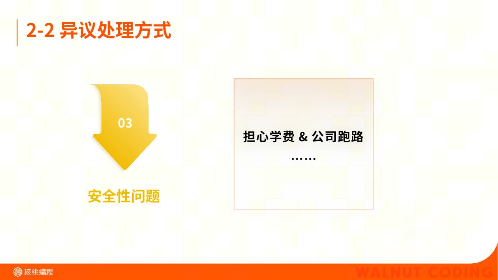
接下来是担心学费安全这个异议，一共 5 步：共情→聚焦问题→出示资质佐证→可视化参观→强调学员规模。核心目标：打消家长机构跑路、学费没有保障的顾虑，用监管、资质、体量建立信任。第①步：共情老师也特别理解，近些年确实有部分机构出现过类似情况，有这样的顾虑很正常，您别担心。第②步：聚焦问题话术：核桃不会出现这类情况，我们是有资金监管账户来保障大家学费安全的。第③步：发公司资质、公司规模话术：咱们这边可以给您提供营业执照、报名可以开具正规发票，同时还有试学期，加上资金监管账户多重保障，您的权益是有保障的，也可以了解下咱们公司的学员体量。第④步：可视化参观话术：如果您离得近，欢迎您来公司实地参观；距离比较远的话，咱们也可以视频沟通，给您介绍公司环境和团队。第⑤步：强调学员规模话术：核桃累计学员 1000万以上，是编程赛道头部品牌，体量很大，运营稳定，您完全可以放心。话术参考：老师也特别理解，近些年确实有部分机构出现过类似情况，有这样的顾虑很正常，您别担心。（共情）核桃不会出现这类情况，我们是有资金监管账户来保障大家学费安全的。（聚焦）咱们这边可以给您提供营业执照、报名可以开具正规发票，同时还有试学期，加上资金监管账户多重保障，您的权益是有保障的，也可以了解下咱们公司的学员体量。（资质佐证）如果您离得近，欢迎您来公司实地参观；距离比较远的话，咱们也可以视频沟通，给您介绍公司环境和团队。（可视化参观）核桃累计学员 1000万以上，是编程赛道头部品牌，体量很大，运营稳定，您完全可以放心。（强调规模）。来看一道题，打消学费安全顾虑的佐证有哪些？
互动题
打消学费安全顾虑的佐证有哪些？
- A. 营业执照、正规发票
- B. 资金监管账户
- C. 试学期
- D. 以上全部
选错后：重讲本页重触发
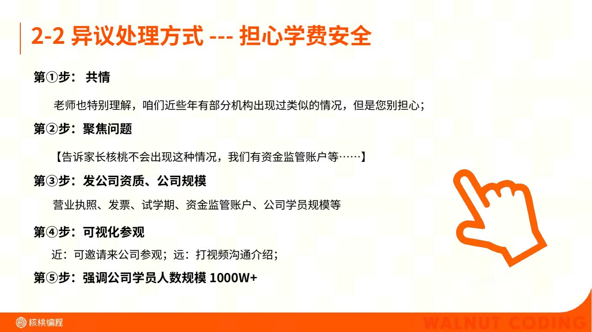
这一页汇总了 5 类高频家长异议，核心思路统一延续咱们之前的 5 步异议框架，每一类的核心抓手：1. 不感兴趣：先提问挖清孩子不感兴趣的真实原因，再用闯关 + 实操的正向反馈，帮孩子找回成就感和自信心2. 时间问题：先共情，聚焦区分是家长没时间还是孩子排不开；给到灵活约课、约补课方案，再讲思维提升反帮孩子省时间3. 担心学不会：拼音模式、语音读题、在线答疑，加上小灶辅导兜底；把复杂知识点拆分，降低难度，帮孩子逐步建立信心4. 家里人不同意：邀请另一位家长共同沟通，对齐认知；用试学期降低决策压力，不用直接敲定长期报名5. 对比竞品：只突出核桃莫顿实操体系的独特优势，严格不拉踩、不贬低其他机构
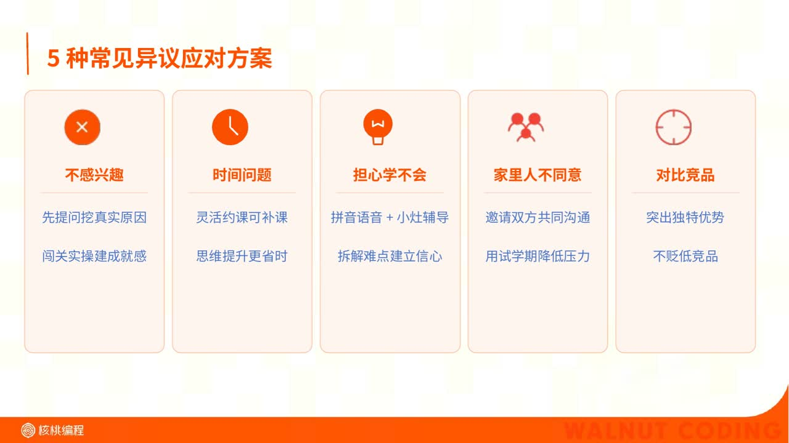
然后我们今天这节课到这就全部结束了，更多的是在课上给大家讲的思路，你只要有思路了，知道怎么说了，有大概一个思路之后呢，我们会给到你具体的话术，你思路结合话术，你掌握起来也很快，而且最后的效果也非常好。来看一道题，「担心学不会」的应对抓手是？
互动题
「担心学不会」的应对抓手是？
- A. 提供小灶辅导，拆解难点建立信心
- B. 直接降价
- C. 推荐换课程
- D. 让家长自己想办法
选错后：重讲本页重触发
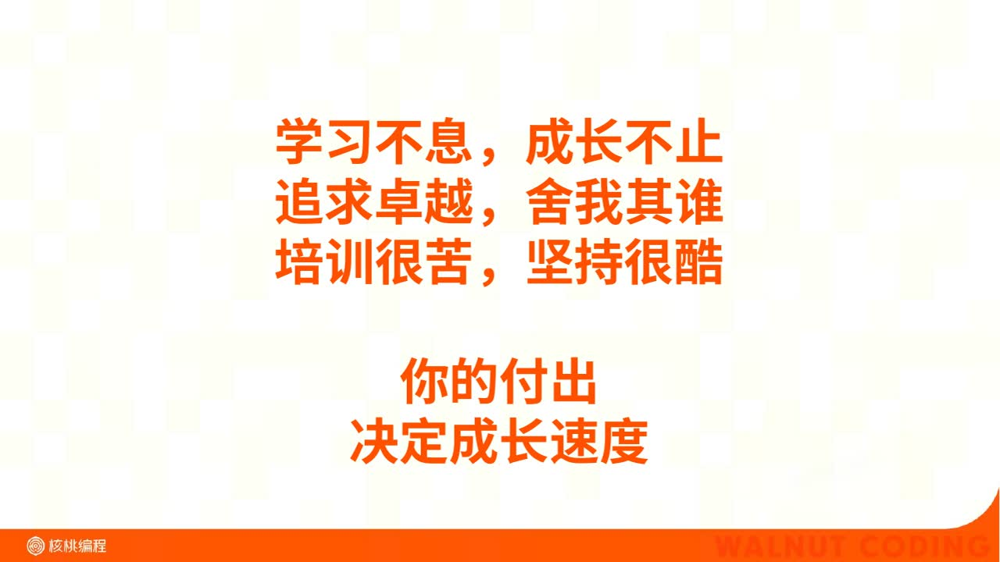
记得扫码哦~
记得扫码哦~
题库（阶段小测 + 综合测试）
T-S01 · 阶段练习题 · 阶段1测试题 · 答案 AB
本次培训由哪两部分组成？【多选】
- A. 成交三性
- B. 常见异议及处理方式
- C. 赛考政策解读
- D. 退费流程演练
T-S02 · 阶段练习题 · 阶段1测试题 · 答案 D
「紧迫性」要回答家长的问题是？
- A. 为什么要学编程
- B. 为什么别的机构便宜
- C. 为什么得在核桃学
- D. 为什么得现在学
T-S03 · 阶段练习题 · 阶段1测试题 · 答案 A
「唯一性」要回答家长的问题是？
- A. 为什么得在核桃学
- B. 为什么要学编程
- C. 为什么得现在学
- D. 为什么编程这么火
T-S04 · 阶段练习题 · 阶段1测试题 · 答案 A
重要性、紧迫性是所有机构都能讲的内容，真正让家长选择核桃的，是唯一性。
- A. 正确
- B. 错误
T-S05 · 阶段练习题 · 阶段2测试题 · 答案 D
页面划重点的等式是「异议处理 = ？」
- A. 把家长辩赢
- B. 给家长降价
- C. 让家长别再提问
- D. 解决家长问题
T-S06 · 阶段练习题 · 阶段2测试题 · 答案 A
家长愿意把顾虑说出来，反而是沟通机会；什么都不问、直接不回复，才是真正没有机会。
- A. 正确
- B. 错误
T-S07 · 阶段练习题 · 阶段2测试题 · 答案 AC
下面哪些是页面列出的家长高频拒绝理由？【多选】
- A. 孩子视力不好
- B. 老师太年轻
- C. 我要在线下学
- D. 课程太前沿
T-S08 · 阶段练习题 · 阶段2测试题 · 答案 ABC
家长的异议被归纳成哪三大类？【多选】
- A. 家长重视度
- B. 产品认知度
- C. 安全性问题
- D. 课程时长问题
T-S09 · 阶段练习题 · 阶段2测试题 · 答案 D
「不会是骗子吧？怕学费打水漂」属于哪一类？
- A. 家长重视度
- B. 产品认知度
- C. 课程时长问题
- D. 安全性问题
T-S10 · 阶段练习题 · 阶段2测试题 · 答案 B
家长说「孩子没时间」，用「问」先区分的真实卡点是？
- A. 孩子笨还是聪明
- B. 是档期排太满，还是担心每次上课耗时太长
- C. 贵不贵
- D. 家里谁做主
T-S11 · 阶段练习题 · 阶段3测试题 · 答案 ACD
下面哪些属于「家长重视度」板块的异议？【多选】
- A. 年龄太小
- B. 价格太贵
- C. 视力问题
- D. 英文基础差
T-S12 · 阶段练习题 · 阶段3测试题 · 答案 D
重视度类异议的根源是？
- A. 课程价格太高
- B. 孩子能力不够
- C. 老师讲得不好
- D. 家长还没真正认可编程的价值，觉得可学可不学
T-S13 · 阶段练习题 · 阶段3测试题 · 答案 ABC
「年龄太小」家长担心孩子不认字，咱们的解决方案有？【多选】
- A. 拼音模式
- B. 语音读题
- C. 老师在线答疑
- D. 建议孩子长大再报
T-S14 · 阶段练习题 · 阶段3测试题 · 答案 B
「年龄太小」第④步赋能讲的内容是？
- A. 报名有优惠
- B. 新课标对信息素养有要求、早学早受益、现在课业压力小有时间学
- C. 别的孩子都在学
- D. 编程很难要抓紧
T-S15 · 阶段练习题 · 阶段3测试题 · 答案 C
关于英语基础和编程，正确的是？
- A. 必须先背大量英文单词
- B. 英语成绩要达到 90 分以上才能报
- C. 图形化不涉及英文代码；Python 阶段关键字固定几个、老师逐行带练
- D. 英语差的孩子学不了编程
T-S16 · 阶段练习题 · 阶段3测试题 · 答案 C
关于补课安排，页面给到的口径是？
- A. 不能补课
- B. 每周固定补课一次
- C. 一次两课时合计 70-90min，特殊情况可跟课程导师约时间补课
- D. 补课要额外收费
T-S17 · 阶段练习题 · 阶段3测试题 · 答案 C
视力异议的处理流程，比其他异议多出的第⑤步讲什么？
- A. 降价安抚
- B. 发护眼宣传单
- C. 目前孩子处于电子信息时代，有效引导比杜绝更有效
- D. 承诺保护视力
T-S18 · 阶段练习题 · 阶段3测试题 · 答案 ABC
「不感兴趣」第②步要挖掘的三种可能原因是？【多选】
- A. 学不会
- B. 太简单
- C. 对学习不感兴趣
- D. 太贵
T-S19 · 阶段练习题 · 阶段3测试题 · 答案 B
「不感兴趣」处理的核心总结是？
- A. 兴趣天生，强求没用
- B. 兴趣不是天生的，是在一次次正反馈中培养出来的
- C. 不感兴趣就放弃
- D. 兴趣靠降价激发
T-S20 · 阶段练习题 · 阶段3测试题 · 答案 C
「家里人不同意」第②步要区分的是？
- A. 爸爸还是妈妈说了算
- B. 预算够不够
- C. 家里人对编程本身不了解，还是不了解核桃项目实操课的优势
- D. 孩子成绩如何
T-S21 · 阶段练习题 · 阶段3测试题 · 答案 D
让家里人看到效果、达成共识的落地方式是？
- A. 发课程海报
- B. 承诺保过
- C. 朋友圈打卡
- D. 利用试学期让孩子先上课、做出作品
T-S22 · 阶段练习题 · 阶段4测试题 · 答案 ABC
产品认知度板块，家长的疑问集中在哪三个？【多选】
- A. 价格问题
- B. 课程模式问题
- C. 竞品对比
- D. 上课人数
T-S23 · 阶段练习题 · 阶段4测试题 · 答案 B
家长说「太贵了」，第②步先弄清什么？
- A. 家长的收入水平
- B. 是单纯觉得贵，还是已经和其他机构对比过
- C. 孩子的学习成绩
- D. 家长的职业
T-S24 · 阶段练习题 · 阶段4测试题 · 答案 ABC
页面给到的品牌与课程价值背书包括？【多选】
- A. 核桃是编程行业头部品牌
- B. 课程因材施教、学练考一体
- C. 业内赛考成绩排名靠前
- D. 学费全网最低
T-S25 · 阶段练习题 · 阶段4测试题 · 答案 D
关于咱们的课程，正确的说法是？
- A. 动画片课
- B. 游戏课
- C. 纯录播回放
- D. 莫顿实操课，孩子跟着剧情动手写代码做项目
T-S26 · 阶段练习题 · 阶段4测试题 · 答案 ABC
「为什么用动画实操」给到的理由是？【多选】
- A. 侦探题材一直是全球动画收视里的热门题材
- B. 剧情融入科普知识和现实生活真实场景
- C. 一份编程课，同时学到科普 + 生活实例
- D. 动画越长越好
T-S27 · 阶段练习题 · 阶段4测试题 · 答案 B
对比竞品时的核心原则是？
- A. 直接说对手坏话
- B. 不拉踩、不贬低，只做差异化对比
- C. 报更低价格
- D. 回避家长问题
T-S28 · 阶段练习题 · 阶段4测试题 · 答案 C
家长说「我要在线下学」，第②步先区分什么？
- A. 家长学历
- B. 是否认识线下机构
- C. 希望老师面对面督促，还是觉得离家近方便接送
- D. 孩子是否喜欢线下
T-S29 · 阶段练习题 · 阶段5测试题 · 答案 ABCD
打消学费安全顾虑的佐证有哪些？【多选】
- A. 营业执照、正规发票
- B. 资金监管账户
- C. 试学期
- D. 近距离可邀请来公司参观、远距离打视频介绍
T-S30 · 阶段练习题 · 阶段5测试题 · 答案 C
强调公司学员规模，页面给到的口径是？
- A. 100 万+
- B. 500 万+
- C. 1000W+
- D. 1 万+
T-F01 · 本章综合测试题 · 本章综合测试题 · 答案 D
异议处理四步标准流程的正确顺序是？
- A. 聚焦提问→共情→答疑→赋能
- B. 赋能→答疑→聚焦提问→共情
- C. 共情→答疑→聚焦提问→赋能
- D. 共情→聚焦提问→针对性答疑→赋能
T-F02 · 本章综合测试题 · 本章综合测试题 · 答案 C
「有效引导比杜绝更有效」出自哪个异议的处理？
- A. 年龄太小
- B. 时间问题
- C. 视力问题
- D. 英语太差
T-F03 · 本章综合测试题 · 本章综合测试题 · 答案 ABC
「担心学不会」类异议，咱们能给的支撑有？【多选】
- A. 拼音模式、语音读题
- B. 老师在线实时答疑
- C. 平板也能上课、课程里教具体操作
- D. 直接免除作业
T-F04 · 本章综合测试题 · 本章综合测试题 · 答案 A
家长说「孩子学两天就不想学了」，共情之后第一个问题应该问？
- A. 您是觉得孩子学不会，还是内容太简单没意思，或孩子对学习类内容不容易提起兴趣
- B. 您预算多少
- C. 您要不要先交定金
- D. 您孩子几年级
T-F05 · 本章综合测试题 · 本章综合测试题 · 答案 C
处理价格异议和竞品对比时，共同的落地兜底动作是？
- A. 直接申请最低折扣
- B. 让家长自己去比较
- C. 利用试学期，先体验看到效果再做长期决定
- D. 承诺随时退款
T-F06 · 本章综合测试题 · 本章综合测试题 · 答案 A
通过询问找到家长异议，进行解决，不管任何问题都可以解决。
- A. 正确
- B. 错误
T-F07 · 本章综合测试题 · 本章综合测试题 · 答案 ABC
关于成交三性，正确的有？【多选】
- A. 重要性——先让家长认可「学编程这件事有意义」
- B. 紧迫性——打消「以后再说」的拖延心态
- C. 唯一性——回答「凭什么选我们而不是别家」
- D. 三性的讲解顺序是唯一性优先
T-F08 · 本章综合测试题 · 本章综合测试题 · 答案 B
家长「想报线下课」在分类上属于？
- A. 家长重视度
- B. 产品认知度
- C. 安全性问题
- D. 上述都不是
T-F09 · 本章综合测试题 · 本章综合测试题 · 答案 B
家长说「XX 机构也有编程课，还便宜」，你的第一步是？
- A. 立刻贬低该机构课程
- B. 共情后问清家长在对比哪家机构，再帮家长客观分析
- C. 直接说我们最便宜
- D. 让家长自己看着办
T-F10 · 本章综合测试题 · 本章综合测试题 · 答案 B
异议处理的目标是把家长「辩赢」，让家长无话可说。
- A. 正确
- B. 错误
T-F11 · 本章综合测试题 · 本章综合测试题 · 答案 ABC
讲「资金监管」相关内容时，可以配合的动作有？【多选】
- A. 提供营业执照
- B. 说明报名可以开具正规发票
- C. 近距离邀请来公司参观、远距离打视频介绍
- D. 回避家长资金问题
T-F12 · 本章综合测试题 · 本章综合测试题 · 答案 A
家里人说「我跟孩子爸商量一下」，最合适的组合动作是？
- A. 邀请另一位家长共同沟通 + 用试学期降低决策压力
- B. 让家长自己说服
- C. 放弃跟进
- D. 只跟已认可的一方联系